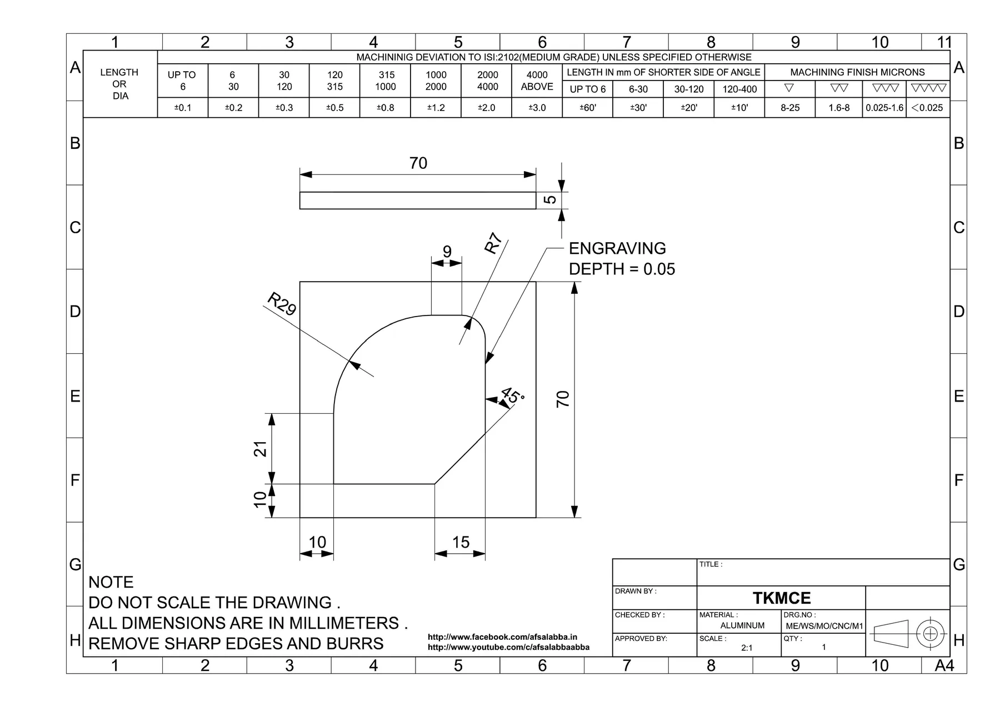
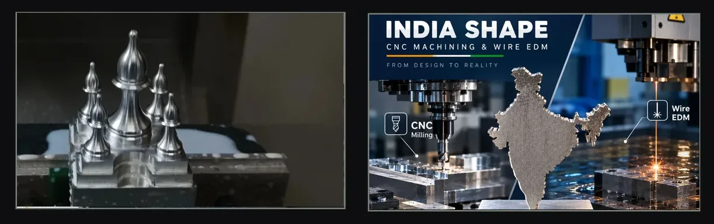

CNC Milling
Semester 6
3D Model
Loading 3D model…
Drag to rotate · Scroll or pinch to zoom · Right-drag or two fingers to pan
views
Engineering Drawing




Semester 6
Loading 3D model…
Drag to rotate · Scroll or pinch to zoom · Right-drag or two fingers to pan
